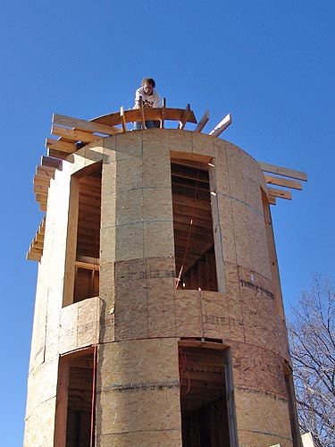
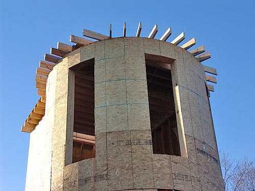
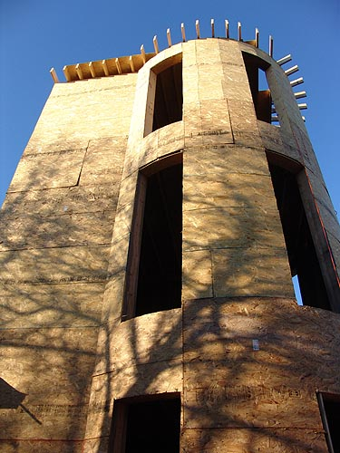
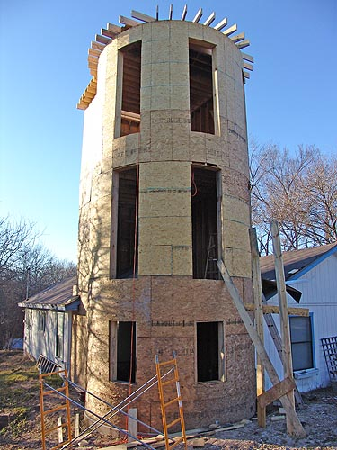

That's me on the right and Lynn on
the left. A lot of makeshift ladders to get to the top, but not bad once
you're up there.

Lynn made an arc template to
set on the edge and cut all the trusses to the right length for the one
foot hangover.

Here's a close up after they're
all cut. We'll have crenelations above so that when we're on the roof,
we have a short wall around us to be more secure.

Some of the plywood is up on
the roof, and it should be sealed in by the end of the week.

I'd like to put a Christmas
tree up in one of the floors this week. We have a thing about getting them
the day before Christmas and then leaving them up for a while....
Lynn and I have been talking
that putting another floor on the regular house is going to be a piece
of cake after all that we've had to do to get the tower up.